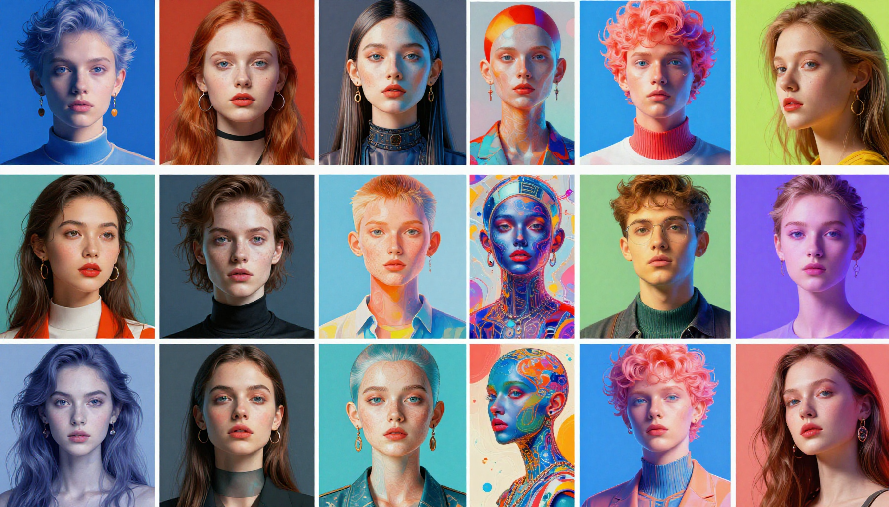

Best AI Image Generators in 2026: Midjourney vs DALL-E vs Flux vs Ideogram

AI image generation has exploded in capability. In 2026, the tools available can produce photorealistic images, stunning artwork, and creative visuals that rival professional designers. But which one is right for you?
We tested the four leading AI image generators across 50+ prompts in multiple categories: photorealism, artistic style, text rendering, logo design, and more. Here are the results.
Quick Comparison
| Tool | Best For | Price | Quality | Ease |
|---|---|---|---|---|
| Midjourney V7 | Artistic & creative images | $10/mo+ | ⭐⭐⭐⭐⭐ | ⭐⭐⭐⭐ |
| DALL-E 3 | Easy prompt following | Included in ChatGPT | ⭐⭐⭐⭐ | ⭐⭐⭐⭐⭐ |
| Flux Pro | Photorealism | $0.05/image+ | ⭐⭐⭐⭐⭐ | ⭐⭐⭐⭐ |
| Ideogram | Text in images | Free tier / $8/mo | ⭐⭐⭐⭐ | ⭐⭐⭐⭐⭐ |
1. Midjourney V7 — Best Overall
Midjourney continues to be the gold standard for AI-generated imagery. Version 7 brings improved photorealism, better text rendering, and more consistent results. The aesthetic quality of Midjourney images is simply unmatched.
- Strengths: Artistic quality, aesthetics, consistency, upscaling
- Weaknesses: Discord-based interface (though web is improving), learning curve for prompts
- Pricing: Basic $10/mo (200 images), Standard $30/mo (900 images), Pro $60/mo (unlimited relaxed)
2. DALL-E 3 — Best for Beginners
Integrated directly into ChatGPT, DALL-E 3 is the most accessible AI image generator. It follows prompts with remarkable accuracy and handles complex scenes well. It's perfect for users who want good results without learning prompt engineering.
- Strengths: Prompt accuracy, ease of use, included with ChatGPT Plus
- Weaknesses: Less artistic than Midjourney, occasional oversanitization
- Pricing: Included with ChatGPT Plus ($20/mo) or pay-per-image via API
3. Flux Pro — Best for Photorealism
Flux, from Black Forest Labs (founded by former Stable Diffusion researchers), excels at photorealistic images. It produces incredibly lifelike results that are often indistinguishable from real photographs.
- Strengths: Photorealism, detail, natural lighting and textures
- Weaknesses: Less creative/artistic than Midjourney, API-only for best quality
- Pricing: Pay-per-use via API, or free with Flux Schnell (lower quality)
4. Ideogram — Best for Text Rendering
Ideogram's standout feature is its ability to render readable, accurate text within generated images — something most AI image generators struggle with. If you need logos, posters, or any image with text, Ideogram is the clear choice.
- Strengths: Text rendering, typography, logo design
- Weaknesses: Less artistic freedom, smaller community
- Pricing: Free tier (limited), Plus $8/mo, Pro $20/mo
Our Recommendations
For most people: Start with DALL-E 3 (via ChatGPT Plus) — it's the easiest to use and produces great results.
For creatives and designers: Midjourney V7 — the quality ceiling is the highest.
For photorealism: Flux Pro — nothing beats it for lifelike images.
For logos and text: Ideogram — the only reliable choice for text-in-image generation.
Compare Prices & Features
Check the latest pricing and start generating AI images today.
Try Midjourney →Frequently Asked Questions
Which AI image generator is free?
Microsoft Copilot (powered by DALL-E) offers free image generation. Ideogram has a free tier. Flux Schnell is free but lower quality. Midjourney requires a paid subscription.
Can I use AI images commercially?
Yes, all the tools reviewed above allow commercial use of generated images, though terms vary by plan. Check each service's terms for specifics.
Which is best for logos?
Ideogram is best for logos due to its superior text rendering. Midjourney is good for logo concepts and icons.